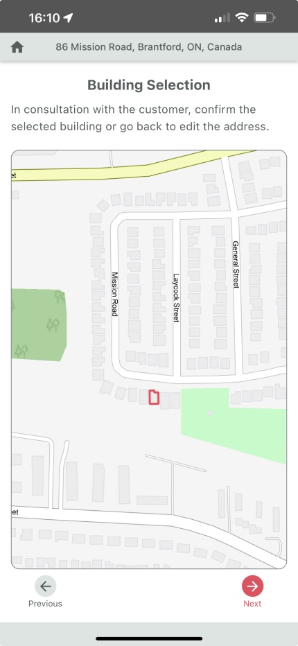
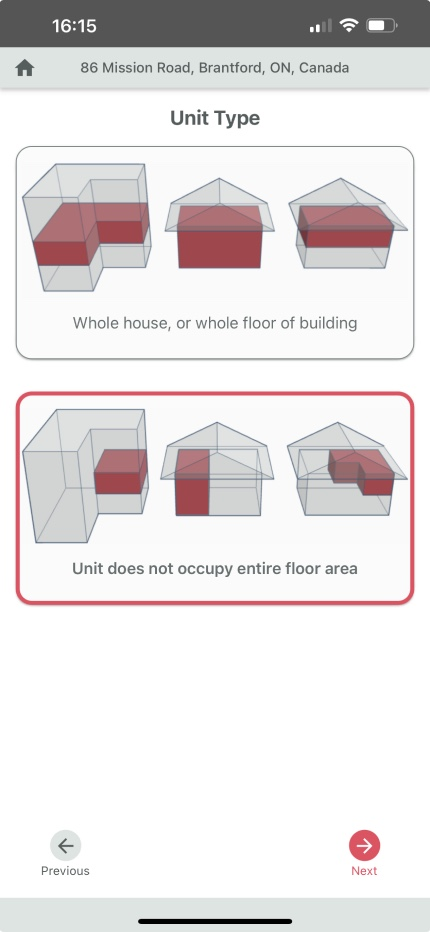
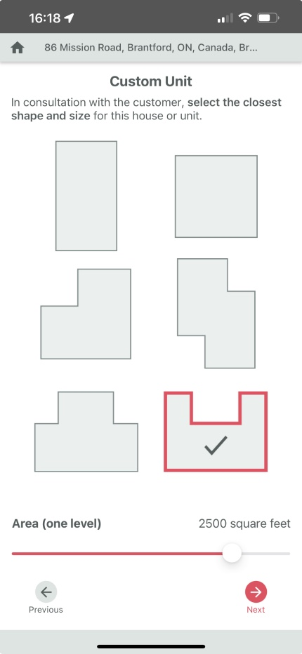
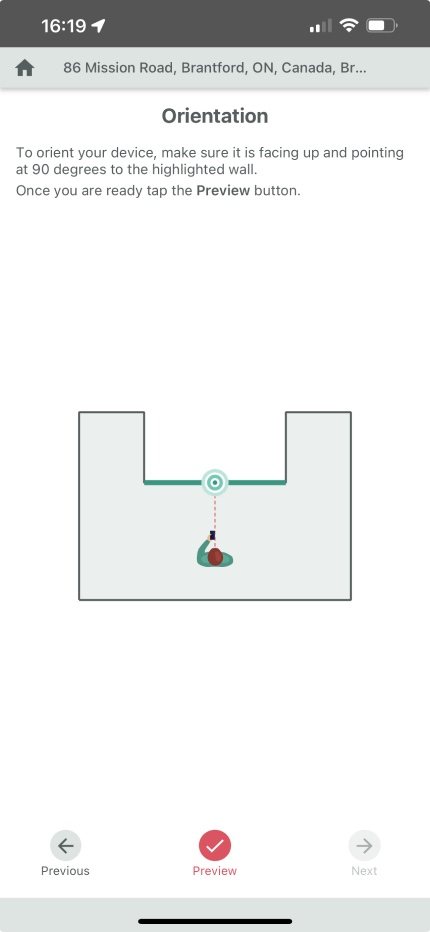
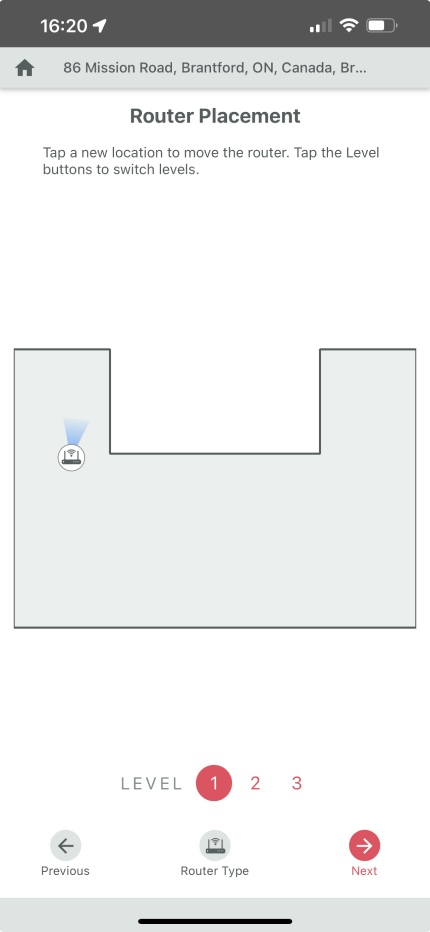
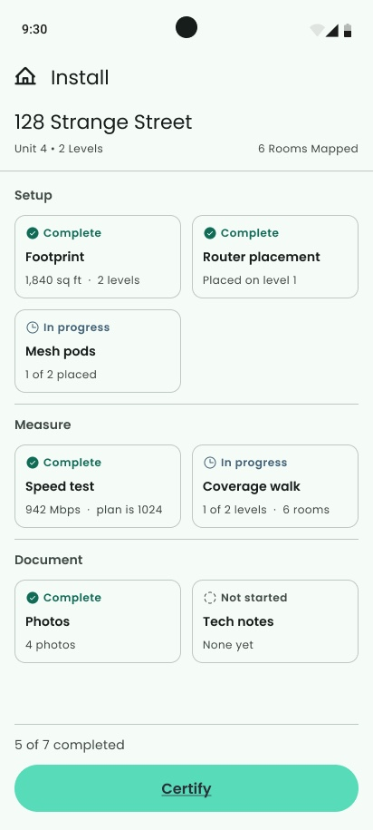

I believe AI is changing the way we work as designers, and I'm excited to be part of that change. This is how I've built it into my daily practice, from concept to working software.
01
Over the past while, I've built AI directly into my daily practice. I use Claude's chat, code, and design features together, with Claude connected to Figma, as a working method that runs through everything I do: how I explore concepts, how I test them, and how I ship them.
02
With Claude connected directly to Figma, I can turn a written brief into a design concept without starting from a blank canvas. What used to take hours of manual exploration now gives me a working starting point in minutes, which I refine and push further by hand.
03
RouteThis - Certify is the Android app field technicians use to run WiFi installations: speed tests, signal mapping, room mapping, and photo capture. The original design was conceived without user research, and it showed: a locked, linear flow that didn't accommodate the different knowledge levels technicians bring to the job.
After a round of interviews, the real problem became clear. To make a change, a technician had to travel back through a long chain of screens, repeating steps they had already completed. The flow, not any single screen, was the problem.
My first experiment was to write out the problems and the change I wanted, then map both the existing linear journey and a new "hub" concept: a single gate at router placement, then seven tools a technician can complete in any order.





Before: five real screens from the live app, each one a forced step with only Previous and Next to move through.
With Claude connected to Figma, I turned that journey map into a working hub screen. Because I can also build with Claude's code capabilities, I didn't stop at static mockups. I built a functional, locally installed version of the app so I can run real user testing against real, working software instead of a click-through prototype. In just a couple of days, working solo, I went from Figma file to a running Android build ready for hands-on testing.

About this project
This is still an ongoing project, so I can't publish the running build here just yet. Once we're talking in an interview, I'll be happy to run the app locally and show you the live version.
04
Copy that works in every language. I use AI to review and adjust UI copy across multiple languages, catching tone, length, and translation issues before they ever reach a user.
Testing directly in the product. Rather than validating hypotheses in isolation, I use AI to help me create and test UI changes directly inside the live product. That shortens the distance between an idea and a validated, or invalidated, answer.
Where this is heading. I'm excited to be part of this shift in how designers work. AI hasn't replaced any part of my process. It has removed the friction between having an idea and knowing whether it works.